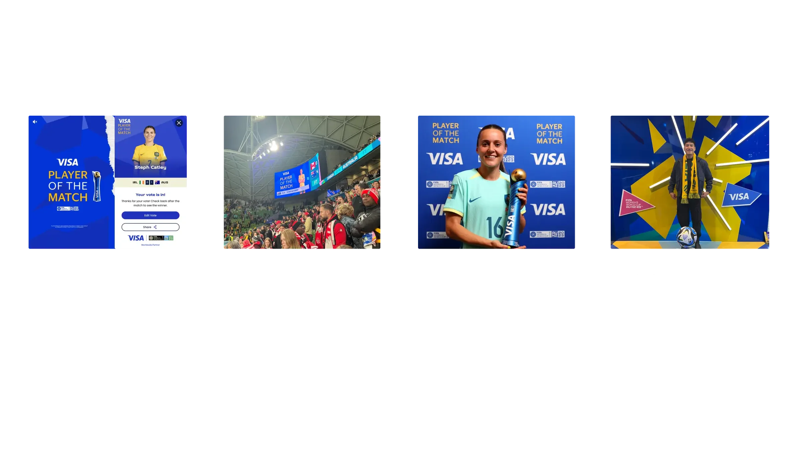
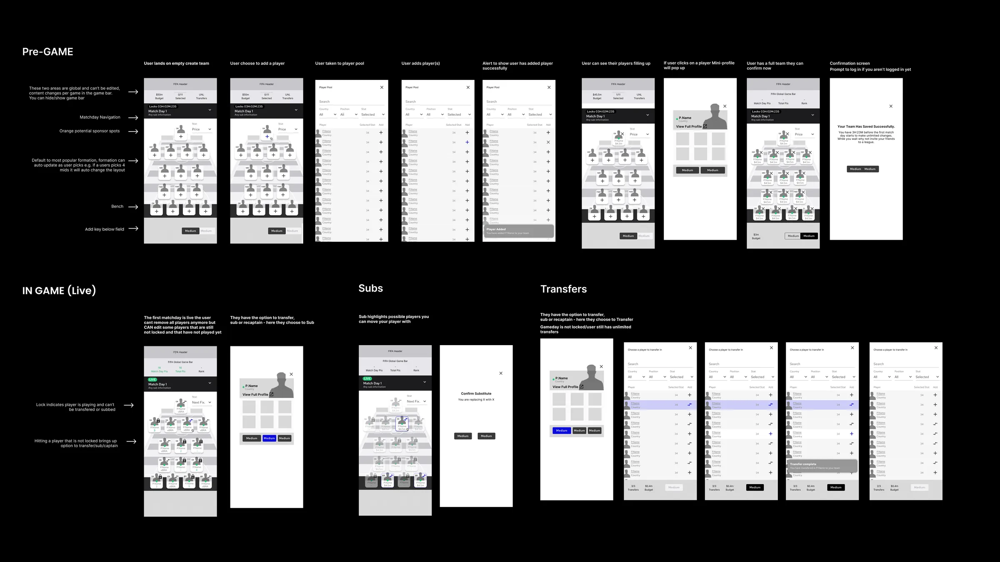
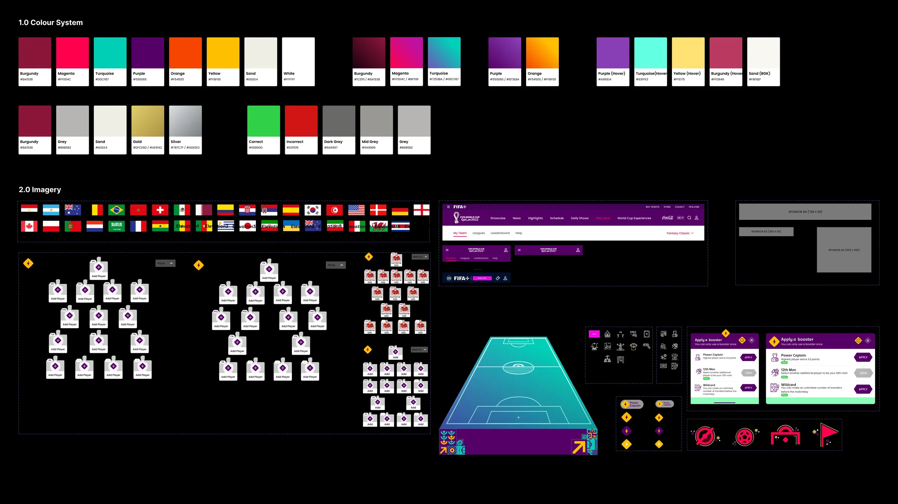
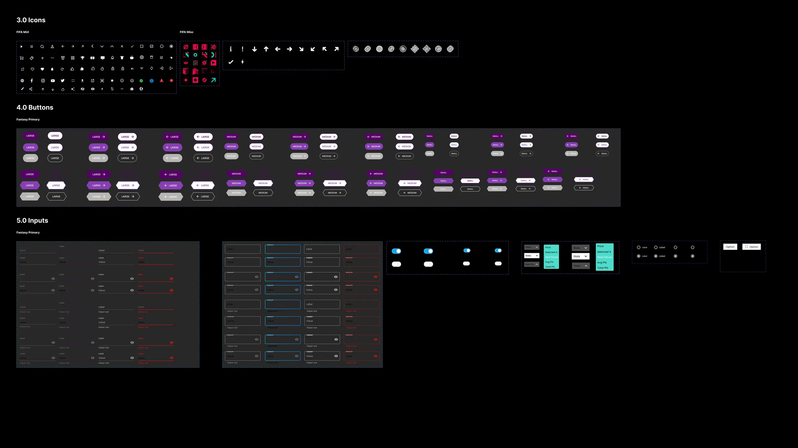
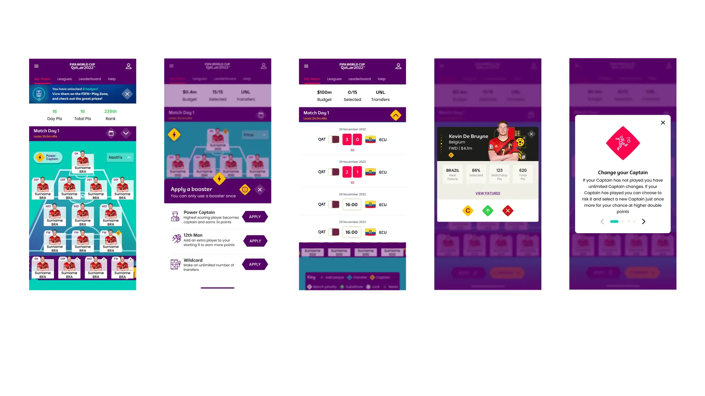
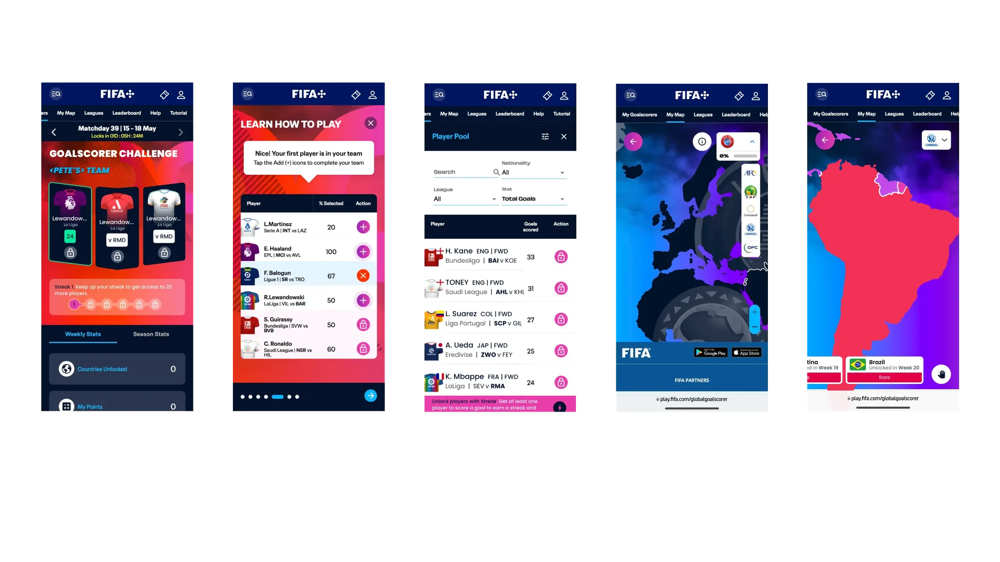
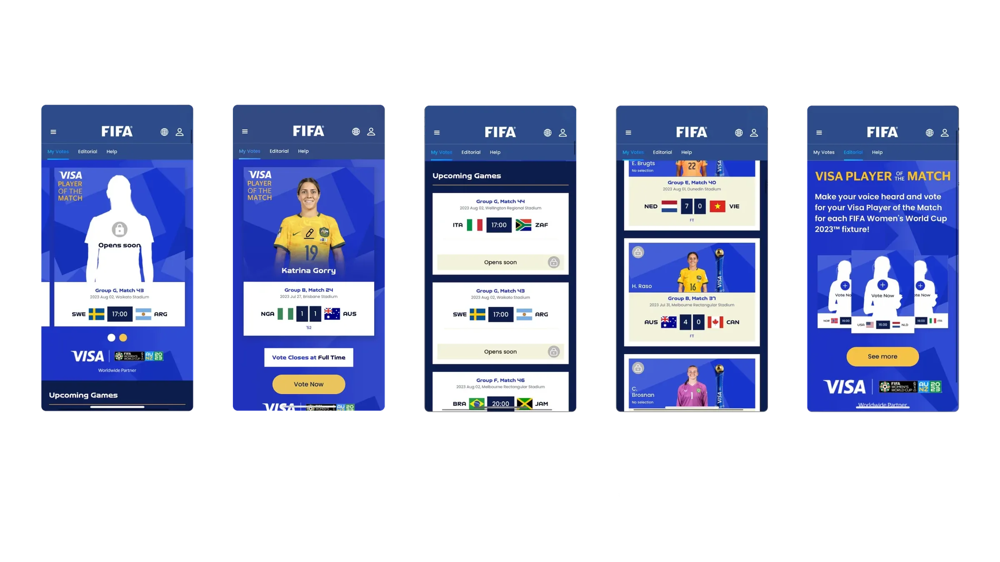

FIFA Play Zone
Overview
FIFA+ is a global digital platform, a free destination connecting hundreds of millions of football fans with live matches, documentaries, editorial content, and interactive experiences. It is one of the most ambitious fan engagement platforms ever built, operating at a scale that few digital products ever reach.
FIFA+ Play Zone is the gamification engine at its heart.
Built and powered by Genius Sports, Play Zone is a dedicated hub combining a suite of free-to-play games, Fantasy, Predictor, Goalscorer Challenge, Player of the Match, Who am I?, Pairs, with a unified gamification layer of levels, badges, trophies, and daily challenges. It was designed not just to entertain fans, but to convert them: from anonymous visitors into registered, engaged, and commercially valuable participants.
I was one of three Product Designers on this project, working across the full experience, from strategic design decisions and interaction patterns through to the UI kit, component system, and platform-specific implementation across web, iOS, and Android.
The platform drove over 2 million FIFA+ registrations in two months, and was shortlisted for Best Use of Gamification at the 2023 Hashtag Sports Awards.
The Problem
Sport produces some of the most passionate audiences on the planet, but passion is event-driven. Fans arrive in enormous numbers around a match, a tournament, a moment. Then they leave.
FIFA+ had the opposite challenge to most digital products: it wasn't struggling with acquisition. The FIFA World Cup Qatar 2022™ guaranteed traffic at a scale most platforms never see. The problem was what happened after the final whistle.
Without a compelling reason to return, users would behave like they always had on sports platforms, spike during the event, disappear once it ended. And for a platform with commercial ambitions that depended on a large, registered, engaged audience, event-driven traffic wasn't enough.
Additionally, FIFA+ needed something that traditional content platforms can't provide: a value exchange. For FIFA to build a commercially meaningful audience, one it could offer to partners like Visa, Hyundai, and Crypto; it needed users to register. Registration required a reason. Passive content consumption rarely provides one.
The problem statement:
How might we create a gamified platform that converts event-driven visitors into consistently engaged registered fans, while delivering measurable commercial value for FIFA and its partners?
My Role
As Product Designer, I was responsible for:
- Translating the product strategy into a coherent, scalable user experience across web, iOS, and Android
- Designing the core interaction model, the engagement loop that would drive daily return behaviour
- Designing the personalised dashboard system and the gamification layer (levels, badges, trophies, daily challenges)
- Designing sponsor and partner integration surfaces, adhering to multi-partnership brand guidelines while creating commercial value and enhancing the user experience
- Building the UI kit and component library in Figma, used as the foundation for engineering implementation
- Collaborating closely with FIFA's head of product, engineering lead, and the digital team throughout the project
- Role
- Product Designer
- Timeline
- 2022-2023
- Platforms
- iOS, Android, Web
- Company
- Genius Sports, FIFA
Discovery & Strategy
Understanding the fan
The design work began with a clear-eyed assessment of the audience: global football fans ranging from casual viewers to deeply committed supporters, spanning hundreds of markets, languages, and levels of digital literacy. Any experience that required significant onboarding, complexity, or time investment would fail at the scale FIFA+ was operating.
Three principles emerged from this early phase and shaped every design decision that followed:
1. Low friction entry, high frequency return. The games needed to be fast to understand and fast to play. Complexity is a barrier to first-time engagement; simplicity is what drives the habit of coming back.
2. Personalisation is the retention mechanism. Generic experiences lose fans quickly. An experience that adapts to your past behaviour, your favourite teams, and your current engagement level feels like it knows you, and that feeling is what creates loyalty.
3. The commercial layer must feel native, not interruptive. Sponsor activations are essential to the platform's business model. But a sponsorship that disrupts the user experience destroys the trust it's trying to leverage. The design needed to make commercial integration feel like part of the product, not bolted onto it.
The core engagement loop
With the principles defined, I worked with the product team to design the core loop that would underpin the entire platform:
Play → Earn → Personalise → Compete → ReturnEvery feature, interaction, and gamification element was designed to serve one or more stages of this loop. Nothing made it into the product that didn't contribute to bringing a user back.
Design Approach
The personalised hub
The entry point to Play Zone is a dynamic hub, a dashboard that surfaces the right games, challenges, and prompts for each individual user, based on their preferences, history, and current activity.
This was a significant design challenge. A lobby that shows the same content to every user is just a list. A lobby that adapts to each user is a product that feels alive.
The solution used a prioritisation system based on three inputs: a user's past gaming activity (what have they played before?), their stated preferences (what teams and competitions do they follow?), and contextual signals (what's happening in football right now?). The result was a lobby that felt personally curated, even though it was operating at global scale.
Key design decisions:
- Game card hierarchy was dynamic, not static; high-engagement games surfaced to the top based on user behaviour
- Contextual prompts appeared at the right moments: before a match (play the Predictor), during a tournament phase (complete your Fantasy team), after a game (check Player of the Match)
- Progress indicators were persistent and prominent, always showing the user where they stood in their levels and challenges, making the next step feel immediately achievable
The gamification layer
The gamification system: levels, badges, trophies, daily challenges, is what transformed Play Zone from a collection of games into a destination.
The design philosophy was deliberately progressive. Fans who played once saw their first badge earned. Fans who played daily saw their level rise. Fans who competed across multiple games unlocked exclusive badges, and those would play across different tournament will earn Trophies. The system was designed to reward at every level of engagement, so the casual fan and the power user both found something worth returning for.
Daily challenges were the engine of habit formation. Each day, users were given specific targets: play a certain game, make a prediction, answer a question, that kept the experience feeling fresh and gave fans a reason to open Play Zone even on days without live matches. This was the design decision that addressed the off-event retention problem most directly.
Leaderboards and shared competition added the social layer: fans could see where they stood against the global community, creating stakes that extended well beyond any individual game.
Sponsor and partner integration
One of the most delicate design challenges was the commercial layer. FIFA+ Play Zone hosted major brand partners Visa, Hyundai, Crypto, Coca-cola, Lays, McDonalds, etc and needed to create genuine value for those partners without compromising the user experience.
The approach was to design sponsor touchpoints as interactive activations, not passive placements. Rather than banner ads or interstitials, sponsors participated in the game mechanics: branded challenges, co-presented leaderboards, exclusive rewards. The sponsorship felt like part of the product because it was designed to be part of the product.
This distinction: integration vs. interruption, was a core design principle, and it shaped every sponsor touchpoint in the platform.
Case study: Visa Player of the Match > from app to stadium
The Visa Player of the Match feature illustrates how far a well-designed sponsor integration can travel.
On FIFA+, it began as a digital voting mechanic: fans opened the app during a live match, selected their player of the match candidate, and received a confirmation state with Visa branding. The interaction was fast, native to the match moment, and felt like a genuine fan contribution rather than a branded prompt.
What happened next is what made it unusual as a design outcome.
The Visa Player of the Match brand, the same visual language designed for the app, was carried directly into the physical match environment. During the FIFA Women's World Cup AU/NZ 2023, the feature appeared on stadium LED scoreboards at venues including AAMI Park in Melbourne. The identical branding ran on the main screen visible to tens of thousands of fans inside the stadium, alongside the live scoreline. The broadcasted award ceremony at the end of the match, where the most voted player presented on-pitch with the trophy against a Visa-branded backdrop, used the same visual identity.
The result was a closed loop: a fan in the stadium voted on their phone, saw the branding on the screen above them, and watched the winner announced in front of it. The digital product and the physical experience were designed as one system: even if the stadium implementation sat outside the direct scope of the app design work.
What this demonstrated:
- A sponsor integration designed well enough to be adopted across multiple channels
- The design system's visual coherence holding under the constraints of LED display environments, print backdrops, and broadcast production
- Real-world evidence of a commercial partnership that created value for Visa (brand presence at scale, inside match moments), for FIFA (a coherent fan experience across digital and physical touchpoints), and for fans (a vote that felt meaningful because the outcome was visible)
This is what it looks like when the principle of integration over interruption is taken seriously: the brand doesn't interrupt the experience. It becomes part of the memory of being there.

Cross-platform design
Play Zone operated across web, iOS, and Android simultaneously, with a global user base accessing the product on an enormous range of devices, screen sizes, and connection speeds.
The design system was built mobile-first, with the expectation that the majority of engagement would happen on phones, during matches, on the go. The web experience then expanded on this foundation rather than being designed separately.
Component decisions were made with cross-platform consistency as a hard constraint: the same gamification logic, the same visual language, the same interaction patterns implemented natively on each platform. This required close collaboration with the engineering team from the earliest stages of design, not as a handoff but as an ongoing conversation.

The Design System
The UI kit I built for Play Zone became the shared design language for the entire product — used by the team across the full suite of games, the gamification layer, and the sponsor integration surfaces.
Key components:
- Game cards: flexible components supporting multiple game types, states (upcoming, live, completed), and entry points
- Progress components: level bars, badge medals, trophy cases, level trackers, all designed as a family with consistent visual logic
- Dashboard modules: composable sections that could be reordered, personalised, and contextually surfaced based on user state
- Sponsor integrations: a distinct but harmonious visual treatment for branded content that was clearly differentiated without feeling foreign
Every component was designed with all states documented: default, loading, empty, active, completed, locked. The complexity of a global gamification platform across three platforms meant that edge cases weren't edge cases: they were regular states that millions of users would encounter.


- Categories
- Gamification | Free to Play | Design Systems | Engagement & Loyalty | Sponsor Activation
- Users
- +2 Million active fans
- Design key outcome
- 18% increase in returning users
- Engineering outcome
- 2023 Hashtag Sports Awards - Shortlisted, Best Use of Gamification
Results & Impact
| Metric | Result |
|---|---|
| Daily interactions | ~64Million during Qatar WC 22 |
| Monthly active users | ~2M+ (during FIFA World Cup Qatar 2022) |
| Interactions per session | +30% increase |
| Returning users | +18% increase |
| Platforms | Web, iOS, Android |
| Partners activated | Visa, Hyundai, Crypto, Budweiser, Lays |
| Industry recognition | 2023 Hashtag Sports Awards - Nominee, Best Use of Gamification |
The 2M registration milestone in two months was a key commercial objective for FIFA+, and the direct result of the value exchange the Play Zone was designed to create. Fans registered because the platform gave them a genuine reason to.
The +18% increase in returning users was the metric that mattered most to the long-term product strategy. It meant the gamification design was doing its job: creating habits, not just moments.
Key Decisions & Rationale
Lightweight mechanics over complex ones The instinct for a global gaming platform is to go deep: complex strategy, intricate scoring, layered rules. We deliberately chose the opposite. Games needed to be playable in minutes, understandable without a tutorial, and rewarding even at low investment levels. The trade-off: less immersive depth was worth the gain in reach and frequency.
Daily challenges as the off-event retention mechanism The core business risk for Play Zone was the post-tournament cliff, the drop in engagement once the World Cup ended. Daily challenges were specifically designed to address this. By giving fans a daily reason to open the product that wasn't dependent on a live match, we built a habit that could survive the off-season.
Designing the gamification layer as a unified system, not isolated features Levels, badges, trophies, and daily challenges could have been designed as separate features bolted together. Instead, they were designed from the outset as a single progression system, with a consistent visual language and a coherent logic that spanned the entire product. The result was an experience that felt like one thing, not many; which is what made it feel premium rather than cluttered.
Earning the commercial layer through design quality The decision to treat sponsor integration as product design, not advertising, was a philosophical one with practical consequences. It required more design effort and more collaboration with the commercial team. But it produced sponsor surfaces that users engaged with rather than scrolled past, which is ultimately what creates value for the sponsors and the platform alike.
What I Learned
Scale changes everything. Designing for a platform used by more than two million people across hundreds of markets is fundamentally different from designing for a local or regional audience. Every assumption about familiarity, context, and cultural reference has to be interrogated. The simplest interactions need to be the most rigorously considered, because at scale, edge cases become mainstream experiences.
Gamification only works when it earns trust. The biggest risk with gamification systems is that they feel manipulative, like the product is trying to trick you into engagement rather than genuinely rewarding it. The design discipline required to avoid this is considerable. Every mechanic has to be genuinely fun, the rewards have to feel meaningful, and the progression has to feel fair.
Commercial viability and user experience are not opposites. The sponsor integration work on Play Zone challenged a common design assumption: that commercial requirements and user experience are in tension. Done well, they aren't. A sponsor activation that's well-designed is one that users engage with, which creates more value for the sponsor, which creates more commercial runway for the product to keep improving. The alignment is real; it just requires the design to be good enough to find it.
01

02

03

see also
SaaS in progressCeres Design systems
AFL Fantasy
Let’s Create Together
Reach out anytime